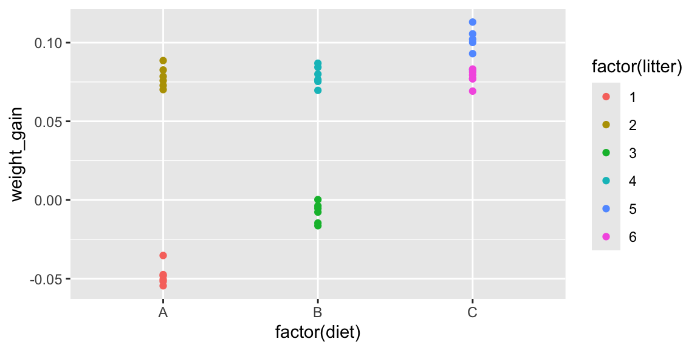
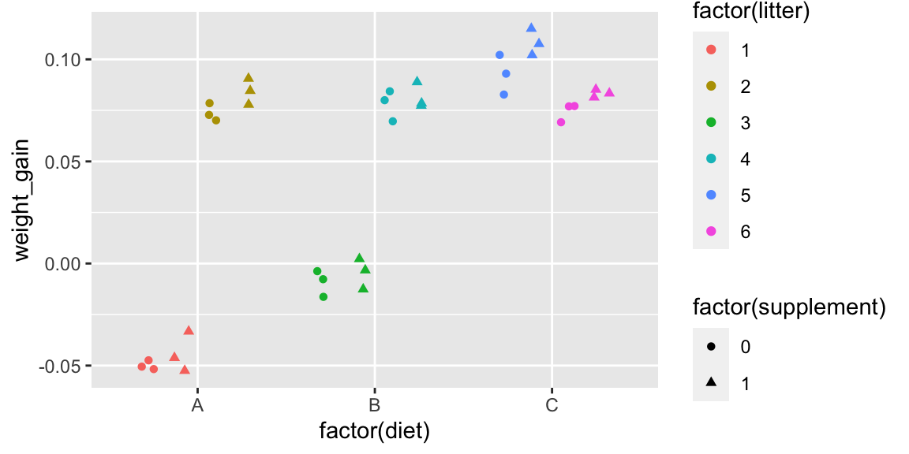
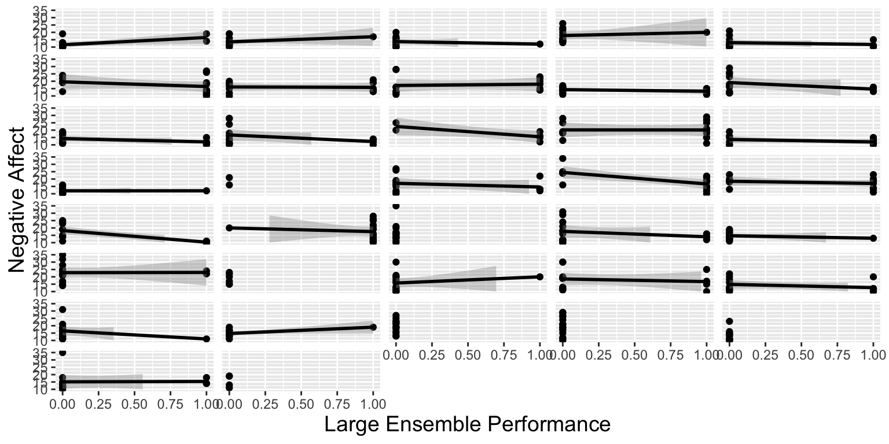
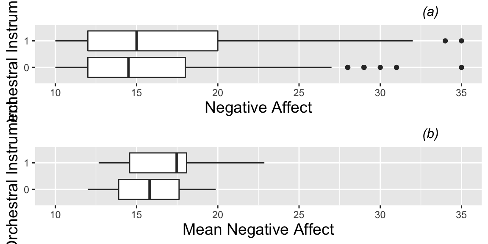
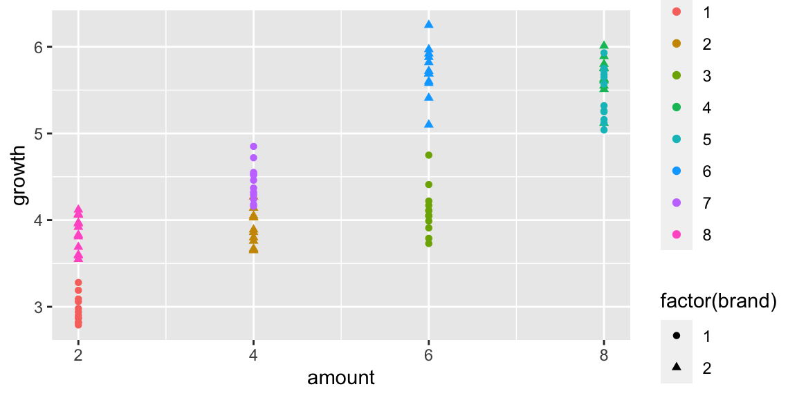

Chapter 3 Multilevel Models
These notes provide a summary of Chapter 8 in Beyond Multiple Linear Regression by Roback and Legler. Much of the code that appears here comes from the textbook's Github repository.
# Packages required for Chapter 8
library(MASS)
library(gridExtra)
library(mnormt)
library(lme4)
library(lmerTest)
library(knitr)
library(kableExtra)
library(tidyverse)3.1 Music Performance Anxiety Study: Data and Exploratory Analysis
3.1.1 Description of the Study
A study by Miller (2010) examined the emotional state of musicians before performances and factors that might affect their emotional state.
- data on 497 different performances by 37 different performers
- performers completed Positive Affect Negative Affect Schedule (PANAS) before each performance, measuring characteristics of anxiety and happiness before performing
- we are interested in whether there are relationships between performance anxiety and characteristics such as performance type (solo, large ensemble, or small ensemble); audience (instructor, public, students, or juried); if the piece was played from memory; age; gender; instrument (voice, orchestral, or keyboard); and, years studying the instrument
- also have information on personalities of musicians, obtained through through the Multidimensional Personality Questionnaire (MPQ), which provided scores for absorption positive emotionality (PEM---a composite of well-being, social potency, achievement, and social closeness); negative emotionality (NEM---a composite of stress reaction, alienation, and aggression); and, constraint (a composite of control, harm avoidance, and traditionalism).
3.1.2 Variables
We focus on the following variables:
id= unique musician identification numberdiary= cumulative total of diaries filled out by musicianperf_type= type of performance (Solo, Large Ensemble, or Small Ensemble)audience= who attended (Instructor, Public, Students, or Juried)memory= performed from Memory, using Score, or Unspecifiedna= negative affect score from PANASgender= musician genderinstrument= Voice, Orchestral, or Pianompqab= absorption subscale from MPQmpqpem= positive emotionality (PEM) composite scale from MPQmpqnem= negative emotionality (NEM) composite scale from MPQ
3.1.3 The Data
#Getting started
music = read.csv("https://raw.githubusercontent.com/proback/BeyondMLR/master/data/musicdata.csv")
head(music,10) # examine first 10 rows## X id diary previous perform_type memory audience pa na age
## 1 1 1 1 0 Solo Unspecified Instructor 40 11 18
## 2 2 1 2 1 Large Ensemble Memory Public Performance 33 19 18
## 3 3 1 3 2 Large Ensemble Memory Public Performance 49 14 18
## 4 4 1 4 3 Solo Memory Public Performance 41 19 18
## 5 5 1 5 4 Solo Memory Student(s) 31 10 18
## 6 6 1 6 5 Solo Memory Student(s) 33 13 18
## 7 7 1 7 6 Solo Memory Instructor 34 11 18
## 8 8 1 8 7 Solo Memory Juried Recital 43 13 18
## 9 9 1 9 8 Solo Score Instructor 34 10 18
## 10 10 1 10 9 Solo Score Student(s) 45 10 18
## gender instrument years_study mpqab mpqsr mpqpem mpqnem mpqcon
## 1 Female voice 3 16 7 52 16 30
## 2 Female voice 3 16 7 52 16 30
## 3 Female voice 3 16 7 52 16 30
## 4 Female voice 3 16 7 52 16 30
## 5 Female voice 3 16 7 52 16 30
## 6 Female voice 3 16 7 52 16 30
## 7 Female voice 3 16 7 52 16 30
## 8 Female voice 3 16 7 52 16 30
## 9 Female voice 3 16 7 52 16 30
## 10 Female voice 3 16 7 52 16 30dim(music) # should be 497 x 18## [1] 497 183.1.4 Some Data Wrangling
We'll select variables we're interested in working with.
select <- dplyr:: select
keydata <- music %>%
dplyr::select(id, diary, perform_type, memory, audience,
na, gender, instrument, mpqab, mpqpem, mpqnem)
head(keydata)## id diary perform_type memory audience na gender instrument
## 1 1 1 Solo Unspecified Instructor 11 Female voice
## 2 1 2 Large Ensemble Memory Public Performance 19 Female voice
## 3 1 3 Large Ensemble Memory Public Performance 14 Female voice
## 4 1 4 Solo Memory Public Performance 19 Female voice
## 5 1 5 Solo Memory Student(s) 10 Female voice
## 6 1 6 Solo Memory Student(s) 13 Female voice
## mpqab mpqpem mpqnem
## 1 16 52 16
## 2 16 52 16
## 3 16 52 16
## 4 16 52 16
## 5 16 52 16
## 6 16 52 163.1.5 Multilevel Structure
Note that we have multiple observations on the same musicians Since observations on the same musician will be correlated, we need to use a multilevel model with a random effect for musician.
Level One Variables: are those measured at the most frequently occurring observational unit (the 497 performances)
- negative affect (our response variable) - performance characteristics (type, audience, if music was performed from memory) - number of previous performances with a diary entry
Level Two Variables: are those measured on larger observational units (the musicians) - demographics (age and gender of musician) - instrument used and number of previous years spent studying that instrument - baseline personality assessment (MPQ measures of positive emotionality, negative emotionality, constraint, stress reaction, and absorption)
3.1.6 Questions of Interest
Do musicians playing orchestral instruments experience different levels or performance anxiety than those playing keyboard instruments or vocalists?
Does playing in a large ensemble (as opposed to a small group or solo performance) have an impact on performance anxiety?
Does the type of audience impact performance anxiety?
Does performance anxiety decrease with experience?
Are measures of the musician's attitude/personality, such as positive emotions, negative emotions, and absorption associated with performance anxiety?
For a single musician, is the amount of performance anxiety consistent across performances, or does it vary from one performance to the next?
3.1.7 Number of Performances by Musician
When creating graphical summaries of level one covariates (variables) it is helpful to plot both 1) the 497 observations individually, and 2) averages for each of the 37 individuals, averaging across performances.
Number of performances by each musician:
# number of diary entries for each subject
music %>% count(id) ## id n
## 1 1 13
## 2 2 14
## 3 3 15
## 4 5 12
## 5 6 15
## 6 7 15
## 7 8 14
## 8 9 15
## 9 10 15
## 10 12 13
## 11 13 15
## 12 15 15
## 13 16 6
## 14 17 15
## 15 18 15
## 16 19 15
## 17 20 2
## 18 21 15
## 19 22 15
## 20 24 15
## 21 25 15
## 22 27 15
## 23 28 15
## 24 29 15
## 25 30 14
## 26 32 15
## 27 33 6
## 28 34 15
## 29 35 15
## 30 36 15
## 31 37 15
## 32 38 15
## 33 39 15
## 34 40 15
## 35 41 11
## 36 42 13
## 37 43 43.1.8 Number of Performances of Each Type
We summarize level one covariates, ignoring the fact that there are multiple observations on the same musicians.
# Exploratory data analysis
# Summarize Level 1 covariates (and responses) by
# ignoring within subject correlation and pretending
# all observations are independent
music %>% count(perform_type) ## perform_type n
## 1 Large Ensemble 136
## 2 Small Ensemble 82
## 3 Solo 279music %>% count(audience) ## audience n
## 1 Instructor 149
## 2 Juried Recital 44
## 3 Public Performance 204
## 4 Student(s) 1003.1.9 Distribution of Negative Affect for All Performances
We display the distribution of the response variable (negative affect) across all 497 performances.
# create ggplot theme for plots
# theme with grid, grey background
theme.1 <- theme(axis.title.x = element_text(size = 14),
axis.title.y = element_text(size = 14),
plot.title=element_text(hjust=.9,face="italic",size=12))
## Histogram of negative affect frequencies
na.all <- ggplot(data=music,aes(x=na)) +
geom_histogram(binwidth = 2, fill = "white",color = "black") +
theme.1 + xlim(10,35) +
xlab("Negative Affect") + ylab("Frequency") + labs(title="(a)")
na.all3.1.10 Distribution of Average Negative Affect for each Musician
We also create a level two dataset, containing the average negative affect across all of the musician's performances.
# Create Level2 data set by picking off one observation
# per subject, which would be easier if every subject
# had a diary entry labeled '1' - should be 37 rows
# and 6 columns (one per L2 variable)
music.lev2 <- keydata %>%
group_by(id) %>%
filter(row_number() == 1) %>%
select(id, gender:mpqnem)
# Add average across all performances for each subject
# for EDA plots
meanbysubj <- music %>% group_by(id) %>%
summarise(meanbysubj = mean(na, na.rm = TRUE))
music.lev2 <- music.lev2 %>%
left_join(meanbysubj, by = "id")
head(music.lev2)## # A tibble: 6 x 7
## # Groups: id [6]
## id gender instrument mpqab mpqpem mpqnem meanbysubj
## <int> <fct> <fct> <int> <int> <int> <dbl>
## 1 1 Female voice 16 52 16 12.3
## 2 2 Female voice 25 28 21 13.8
## 3 3 Female voice 12 23 21 13.6
## 4 5 Female orchestral instrument 28 54 40 18
## 5 6 Female voice 27 58 26 12.7
## 6 7 Female orchestral instrument 11 41 44 17.5We display the mean negative affect scores for each of the 37 musicians.
na.mean <- ggplot(data=music.lev2,aes(x=meanbysubj)) +
geom_histogram(binwidth = 2, fill = "white",
color = "black") +
theme.1 + xlim(10,35) +
xlab("Mean Negative Affect") + ylab("Frequency") + labs(title="(b)")
na.mean
3.1.11 Distribution of Level Two Covariates
We examine the distribution of level 2 covariate instrument type (obtained from first performance by each musician, since these will be the same for all performances).
music.lev2 %>% ungroup(id) %>% count(instrument)## # A tibble: 3 x 2
## instrument n
## <fct> <int>
## 1 keyboard (piano or organ) 5
## 2 orchestral instrument 17
## 3 voice 153.1.12 Distributions of NEM, PEM, Absorption
nem1 <- ggplot(data=music.lev2,aes(x=mpqnem)) +
geom_histogram(binwidth = 5, fill = "white",
color = "black") +
theme.1 +
xlab("NEM") + ylab("Frequency") + labs(title="(a)")
pem1 <- ggplot(data=music.lev2,aes(x=mpqpem)) +
geom_histogram(binwidth = 5, fill = "white",
color = "black") +
theme.1 +
xlab("PEM") + ylab("") + labs(title="(b)")
abs <- ggplot(data=music.lev2,aes(x=mpqab)) +
geom_histogram(binwidth = 5, fill = "white",
color = "black ") +
theme.1 +
xlab("Absorption") + ylab("") + labs(title="(c)")
grid.arrange(nem1,pem1,abs,ncol=3)
3.1.13 Negative Affect by Performance Type, Audience Type, and Previous Performances
Boxplots of two categorical Level One covariates (performance type (a) and audience type (b)) vs. model response, and scatterplot of one continuous Level One covariate (number of previous diary entries (c)) vs. model response (negative affect). Each plot contains one observation for each of the 497 performances.
# Look at relationships among Level 1 covariates and
# primary response (again ignoring correlation).
# Boxplots for categorical covariates and
# scatterplots and lattice plot for continuous covariates.
# boxplot of negative affect by performance type
box.perform <- ggplot(data=music,aes(factor(perform_type),na)) +
geom_boxplot() +
theme.1 + coord_flip() + ylab("Negative affect") +
xlab("") + labs(title="(a) Negative Affect by Instrument Type")
# boxplot of negative affect by audience
box.audience <- ggplot(data=music,aes(factor(audience),na)) +
geom_boxplot() +
theme.1 + coord_flip() + ylab("Negative affect") +
xlab("") + labs(title="(b) Negative Affect by Performance Type")
# scatterplot of negative affect versus number of
# previous performances
scatter.previous <- ggplot(data=music, aes(x=previous,y=na)) +
geom_point() +
theme.1 +
geom_smooth(method="lm",color="black") +
ylab("Negative affect") +
xlab("Previous Performances") + labs(title="(c) Negative Affect by Number of Previous Performances")
# all three together
grid.arrange(box.perform,box.audience,scatter.previous,ncol=2)
3.1.14 Lattice Plot for Negative Affect by Performance Type
We plot negative affect by type of performance for each musician individually. (Lattice plot)
# Lattice plot for NA vs. Performance Type
ggplot(music,aes(x=factor(perform_type),y=na)) + theme.1 +
geom_dotplot(binaxis="y",stackdir="center",binwidth=25/30) +
facet_wrap(~id,ncol=5) +
theme(strip.text.x=element_blank()) + coord_flip() +
labs(x="Performance Type",y="Negative Affect")
3.1.15 Lattice Plot for Negative Affect by Audience Type
We plot negative affect by type of audience for each musician individually.
# Lattice plot for NA vs. Audience
ggplot(music,aes(x=factor(audience),y=na)) + theme.1 +
geom_dotplot(binaxis="y",stackdir="center",binwidth=25/30) +
facet_wrap(~id,ncol=5) +
theme(strip.text.x=element_blank()) + coord_flip() +
labs(x="Audience",y="Negative Affect")3.1.16 Lattice Plot for Previous Performances vs Negative Affect
We plot of previous performances vs. negative affect, with separate scatterplots with fitted lines by musician
# Lattice plot for NA vs. Previous Performances
ggplot(music,aes(x=previous,y=na)) + theme.1 +
geom_point() + geom_smooth(method="lm",color="black") +
facet_wrap(~id,ncol=5) +
theme(strip.text.x=element_blank()) + ylim(10,35) +
labs(x="Previous Performances",y="Negative Affect")
3.1.17 Negative Affect by Instrument Type
Boxplots of the categorical Level Two covariate (instrument) vs. model response (negative affect). Plot (a) is based on all 497 observations from all 37 subjects, while plot (b) uses only one observation per subject.
# Look at relationships among Level 2 covariates and
# negative affect (again ignoring correlation)
instr.all <- ggplot(data=music,aes(factor(instrument),na)) +
geom_boxplot() +
coord_flip() + theme.1 + ylab("Negative Affect") +
xlab("") + labs(title="(a)") + ylim(10,35)
instr.mean <- ggplot(data=music.lev2,
aes(factor(instrument),meanbysubj)) +
geom_boxplot() + coord_flip() +
theme.1 + ylab("Mean Negative Affect") +
xlab("") + labs(title="(b)") + ylim(10,35)
grid.arrange(instr.all, instr.mean, ncol = 1)3.1.18 More Data Wrangling
We create variables for whether or not musician played an orchestral instrument (as opposed to playing piano or being a vocalist), and for whether performance was part of a large ensemble (as opposed to a small ensemble or solo).
3.1.19 Lattice Plot for Large Ensemble Effect
# Lattice plot for NA vs. Performance Type
ggplot(music,aes(x=large,y=na)) + theme.1 +
geom_point() + geom_smooth(method="lm",color="black") +
facet_wrap(~id,ncol=5) +
theme(strip.text.x=element_blank()) + ylim(10,35) +
labs(x="Large Ensemble Performance",y="Negative Affect") 
3.1.20 Boxplots for Orchestral Instrument Effect
# Look at relationships among Level 2 covariates and
# negative affect (again ignoring correlation)
instr.all <- ggplot(data=music,aes(factor(orch),na)) +
geom_boxplot() +
coord_flip() + theme.1 + ylab("Negative Affect") +
xlab("Orchestral Instrument") + labs(title="(a)") + ylim(10,35)
instr.mean <- ggplot(data=music.lev2,
aes(factor(orch),meanbysubj)) +
geom_boxplot() + coord_flip() +
theme.1 + ylab("Mean Negative Affect") +
xlab("Orchestral Instrument") + labs(title="(b)") + ylim(10,35)
grid.arrange(instr.all, instr.mean, ncol = 1)
3.1.21 Negative Affect by PEM, NEM, Absorption
Scatterplots of continuous Level Two covariates (positive emotionality (PEM), negative emotionality (NEM), and absorption) vs. model response (negative affect). The top plots (a1, b1, c1) are based on all 497 observations from all 37 subjects, while the bottom plots (a2, b2, c2) use only one observation per subject.
pem2.all <- ggplot(data=music,aes(x=mpqpem,y=na)) +
geom_point() +
geom_smooth(method="lm",color="black") +
theme.1 + ylab("Negative Affect") +
xlab("PEM") + labs(title="(a1)")
nem2.all <- ggplot(data=music,aes(x=mpqnem,y=na)) +
geom_point() +
geom_smooth(method="lm",color="black") +
theme.1 + ylab("") + xlab("NEM") +
labs(title="(b1)")
abs2.all <- ggplot(data=music,aes(x=mpqab,y=na)) +
geom_point() +
geom_smooth(method="lm",color="black") +
theme.1 + ylab("") +
xlab("Absorption") + labs(title="(c1)")
pem2.mean <- ggplot(data = music.lev2,
aes(x = mpqpem, y = meanbysubj)) +
geom_point() +
geom_smooth(method = "lm", color = "black") +
theme.1 + ylab("Mean Negative Affect") +
xlab("PEM") + labs(title = "(a2)")
nem2.mean <- ggplot(data = music.lev2,
aes(x = mpqnem, y = meanbysubj)) +
geom_point() +
geom_smooth(method = "lm", color = "black") +
theme.1 + ylab("") + xlab("NEM") + labs(title = "(b2)")
abs2.mean <- ggplot(data = music.lev2,
aes(x = mpqab, y = meanbysubj)) +
geom_point() +
geom_smooth(method = "lm", color = "black") +
theme.1 + ylab("") +
xlab("Absorption") + labs(title="(c2)")
mli.scatmat1 <- grid.arrange(pem2.all, nem2.all, abs2.all,
pem2.mean, nem2.mean, abs2.mean, ncol = 3)grid.arrange(pem2.all, nem2.all, abs2.all,
pem2.mean, nem2.mean, abs2.mean, ncol = 3)
3.2 Modeling the Musician Data
3.2.1 Model Notation
Let \(Y_{ij}\) be the negative affect (na) score of the \(i^{th}\) subject before performance \(j\).
head(music)## X id diary previous perform_type memory audience pa na age
## 1 1 1 1 0 Solo Unspecified Instructor 40 11 18
## 2 2 1 2 1 Large Ensemble Memory Public Performance 33 19 18
## 3 3 1 3 2 Large Ensemble Memory Public Performance 49 14 18
## 4 4 1 4 3 Solo Memory Public Performance 41 19 18
## 5 5 1 5 4 Solo Memory Student(s) 31 10 18
## 6 6 1 6 5 Solo Memory Student(s) 33 13 18
## gender instrument years_study mpqab mpqsr mpqpem mpqnem mpqcon orch large
## 1 Female voice 3 16 7 52 16 30 0 0
## 2 Female voice 3 16 7 52 16 30 0 1
## 3 Female voice 3 16 7 52 16 30 0 1
## 4 Female voice 3 16 7 52 16 30 0 0
## 5 Female voice 3 16 7 52 16 30 0 0
## 6 Female voice 3 16 7 52 16 30 0 0For example \(Y_{15}=10\).
We'll investigate the relationship between negative affect and playing an orchestral instrument (level 2), and playing in a large ensemble (level 1), as well as a possible interaction between these explanatory variables.
3.2.2 LLSR Model (Clearly inappropriate)
We treat the 497 observations as independent and run a linear least-squares regression model.
The model is:
\[ \begin{align*} Y_{ij} & = \alpha_{0}+\alpha_{1}\textrm{Orch}_{i}+\beta_{0}\textrm{LargeEns}_{ij}+\beta_{1}\textrm{Orch}_{i}\textrm{LargeEns}_{ij} +\epsilon_{ij}, \end{align*} \]
where \(\epsilon_{ij} \sim\mathcal{N}(0,\sigma^2)\).
3.2.3 LLSR Model Output
# Linear least square regression model with LINE conditions
model0 <- lm(na ~ orch + large + orch:large, data = music)
summary(model0)
Call:
lm(formula = na ~ orch + large + orch:large, data = music)
Residuals:
Min 1Q Median 3Q Max
-7.510 -3.721 -1.444 3.279 19.279
Coefficients:
Estimate Std. Error t value Pr(>|t|)
(Intercept) 15.7212 0.3591 43.778 < 0.0000000000000002 ***
orch 1.7887 0.5516 3.243 0.00126 **
large -0.2767 0.7910 -0.350 0.72662
orch:large -1.7087 1.0621 -1.609 0.10831
---
Signif. codes: 0 '***' 0.001 '**' 0.01 '*' 0.05 '.' 0.1 ' ' 1
Residual standard error: 5.179 on 493 degrees of freedom
Multiple R-squared: 0.02782, Adjusted R-squared: 0.0219
F-statistic: 4.702 on 3 and 493 DF, p-value: 0.003012- Clear violation of independence assumption! Performances by same musician likely to have higher correlation than those by different musicians.
Intuitively, this model is likely to:
* overestimate uncertainty associated with the level one variable (large ensemble), since it will fail to account for variability that can be explained by differences between musicians
* underestimate uncertainty associated with the level two variable (orchestral instrument), since it will act as if the sample size is 497 independent performances, instead of 37 independent musicians
3.2.4 Random vs. Fixed Effects
Instead, we fit a linear mixed effect model to account for the multilevel structure in the data.
We're interested in comparing axiety between instrument types (instrumental, non-instrumental) and types of performance (solos, small ensembles, and large ensembles), so instrument type and performance type are fixed effects.
We're not interested in comparing the 37 musicians themselves, but we want to account for correlation due to having multiple performances by the same musicians. We can think of them as a sample from a larger population of all musicians. Including a random effect for musician in our model helps explain variability in performance anxiety, and allows us to draw more precise conclusions about performance type.
Fixed effects tell us about the mean structure (expected response). Random effects tell us about the amount of variability associated with our estimates.
3.2.5 An Initial Linear Mixed Effect Model
This model has the form:
\[ \begin{align*} Y_{ij} & = \alpha_{0}+\alpha_{1}\textrm{Orch}_{i}+\beta_{0}\textrm{LargeEns}_{ij}+\beta_{1}\textrm{Orch}_{i}\textrm{LargeEns}_{ij} + u_{i}+\epsilon_{ij}, \end{align*} \]
where \(u_i \sim\mathcal{N}(0,\sigma^2_u)\), and \(\epsilon_{ij} \sim\mathcal{N}(0,\sigma^2)\). We assume \(u_i\) and \(\epsilon_{ij}\) are independent.
\(u_i\) is a random effect corresponding to musician id.
3.2.6 Initial Mixed Effects Model in R
We fit the model using the lmer() function in the lme4 package. If the the lmerTest package is loaded, approximate p-values are returned. These are approximate, because the exact distribution of the t-statistics is unknown. Satterthwaite showed that these t-statistics approximately follow t-distributions, with non-integer degrees of freedom.
model1 <- lmer(data=music, na ~ orch + large + orch:large + (1 | id), REML=TRUE)
summary(model1)Linear mixed model fit by REML. t-tests use Satterthwaite's method [
lmerModLmerTest]
Formula: na ~ orch + large + orch:large + (1 | id)
Data: music
REML criterion at convergence: 2987.4
Scaled residuals:
Min 1Q Median 3Q Max
-1.9216 -0.6688 -0.1564 0.5043 4.1699
Random effects:
Groups Name Variance Std.Dev.
id (Intercept) 5.131 2.265
Residual 21.882 4.678
Number of obs: 497, groups: id, 37
Fixed effects:
Estimate Std. Error df t value Pr(>|t|)
(Intercept) 15.9026 0.6187 41.4059 25.703 <0.0000000000000002 ***
orch 1.7100 0.9131 42.8467 1.873 0.0679 .
large -0.8918 0.8415 473.6492 -1.060 0.2898
orch:large -1.4650 1.0880 488.6918 -1.347 0.1788
---
Signif. codes: 0 '***' 0.001 '**' 0.01 '*' 0.05 '.' 0.1 ' ' 1
Correlation of Fixed Effects:
(Intr) orch large
orch -0.678
large -0.282 0.191
orch:large 0.218 -0.308 -0.7733.2.7 Mixed Effects Model Interpretations
For orch=0, the prediction equation is:
\[ \hat{Y}_{ij} = \alpha_{0}+\beta_{0}\textrm{LargeEns}_{ij} \]
we estimate that the average negative affect score for performers with non-orchestral instruments when playing a solo or with a small ensemble is \(\hat{\alpha}_0 = 15.9\).
We estimate that for non-orchestral musicians, average negative affect is \(\hat{\beta}_0 = -0.89\) (i.e. 0.89 points lower) when performing in a large ensemble, compared with playing in a small ensemble or a solo.
For orch=1, the prediction equation is:
\[ \hat{Y}_{ij} = (\alpha_{0}+\alpha_{1})+(\beta_{0} + \beta_1)\textrm{LargeEns}_{ij} \]
we estimate that the average negative affect score for performers with orchestral instruments when performing in solos or small ensembles is \(\hat{\alpha}_0 + \hat{\alpha}_0 = 17.3\).
We estimate that for orchestral musicians, average negative affect is \(\hat{\beta}_0 + \hat{\beta}_1 = -0.89 - 1.46 = -2.35\) (i.e. 2.35 points lower) when performing in a large ensemble, compared with playing in a small ensemble or a solo.
Negative affect score tends to be higher for orchestral musicians than non orchestral musicians when performing solos or in small ensembles, but that negative affect also decreases more for orchestral musicians than non-orchestral musicians, when playing in a large ensemble.
The interaction term is not statistically significany, indicating it is plausible that the effect of playing in a large ensemble, compared to a solo or with a small ensemble is the same for orchestral and non-orchestral musicians.
After accounting for performance type and instrument type, and their interaction, the standard deviation in negative affect scores between different musicians is estimated to be \(\hat{\sigma}_u=2.265\).
After accounting for performance type, instrument type, and their interaction, the standard deviation in negative affect scores between different performances by the same musician is estimated to be \(\hat{\sigma}_u=4.68\).
There is more variability in negative affect between different performances by the same musician than between performances by different musicians, after accounting for performance type, instrument type, and their interaction.
Standard errors on level 1 variable
orchgoes up considerably, which is expected since the mixed effects model understands that the appropriate sampel size is the 37 musicians not the 497 performances.Standard errors on level 2 variable
largeand the interaction go up slightly as well. This is different than what we've seen before. Since there is more variability between individual performances, than between musicians (\(\sigma>\sigma_l\)), accounting for variability explained by performers does not improve precision of estimates.
3.2.8 Mixed Effects Model Without Interaction
We might drop the interaction term to make interpretation easier. This gives the model:
\[ \begin{align*} Y_{ij} & = \alpha_{0}+\alpha\textrm{Orch}_{i}+\beta\textrm{LargeEns}_{ij} + u_{i}+\epsilon_{ij}, \end{align*} \]
where \(u_i \sim\mathcal{N}(0,\sigma_u^2)\), and \(\epsilon_{ij} \sim\mathcal{N}(0,\sigma^2)\). We assume \(u_i\) and \(\epsilon_{ij}\) are independent.
model1b <- lmer(data=music, na ~ orch + large + (1 | id), REML=TRUE)
summary(model1b)Linear mixed model fit by REML. t-tests use Satterthwaite's method [
lmerModLmerTest]
Formula: na ~ orch + large + (1 | id)
Data: music
REML criterion at convergence: 2991.2
Scaled residuals:
Min 1Q Median 3Q Max
-1.9316 -0.6953 -0.1835 0.4684 4.1262
Random effects:
Groups Name Variance Std.Dev.
id (Intercept) 5.214 2.283
Residual 21.901 4.680
Number of obs: 497, groups: id, 37
Fixed effects:
Estimate Std. Error df t value Pr(>|t|)
(Intercept) 16.0853 0.6074 38.0476 26.482 < 0.0000000000000002 ***
orch 1.3317 0.8742 35.4893 1.523 0.136533
large -1.7707 0.5339 493.3004 -3.317 0.000978 ***
---
Signif. codes: 0 '***' 0.001 '**' 0.01 '*' 0.05 '.' 0.1 ' ' 1
Correlation of Fixed Effects:
(Intr) orch
orch -0.658
large -0.182 -0.0773.2.9 Interpretations for Model without Interaction
we estimate that the average negative affect score for performers with non-orchestral instruments when playing a solo or with a small ensemble is \(\hat{\alpha}_0 = 16.09\).
We estimate that, average negative affect is \(\hat{\alpha}_1 = 1.33\) points higher for musicians playing an orchestral instrument, compared to those playing a keyboard or vocalists, assuming performance type is the same.
We estimate that, average negative affect is \(\hat{\beta}_0 = -1.77\) points (i.e. 1.78 points lower) when performing in a large ensemble, compared with playing in a small ensemble or a solo, assuming instrumental type is the same.
After accounting for performance type and instrument type there the standard deviation in negative affect scores between different musicians is estimated to be \(\hat{\sigma}_u=2.28\).
After accounting for performance type, instrument type, there the standard deviation in negative affect scores between different performances by the same musician is estimated to be \(\hat{\sigma}_u=4.68\).
There is more variability in negative affect between different performances by the same musician than between performances by different musicians, after accounting for performance type, instrument type.
3.2.10 Assumptions in First Mixed Effects Model
This model assumes that:
Expected negative affect differs between instrument types and performance types, and, in the case of the model with interaction, the effect of performing in a large ensemble is allowed to differ between musicians playing orchestral instruments and those playing and non-orchestral instruments .
Negative affect scores for different musicians deviate from one another according to a normal distribution with mean 0 and standard deviation \(\sigma_u\) (introducing correlation in error terms between performances by the same musician).
For each musician, negative affect scores between performances deviate from each other according to a normal distribution with standard deviation \(\sigma\).
3.3 Random Slopes Model
3.3.1 Differences in Large vs Small/Solo
The random effect \(u_i\) in the previous model captures random deviations in negative affect score between individual musicians, after accounting for instrument type and performance type.
The model assumes that the difference in negative affect, when performing in an ensemble compared to performing a solo or in a small ensemble is constant accross musicians. This difference can be estimated using fixed effects (e.g. \(\beta\)).
Alternatively, we might want to build a model that allows differences in negative affect between solos/small ensemble performances and large ensemble performances to vary randomly between performers.
Recall the lattice plot:
# Lattice plot for NA vs. Performance Type
ggplot(music,aes(x=large,y=na)) + theme.1 +
geom_point() + geom_smooth(method="lm",color="black") +
facet_wrap(~id,ncol=5) +
theme(strip.text.x=element_blank()) + ylim(10,35) +
labs(x="Large Ensemble Performance",y="Negative Affect") 3.3.2 Illustration of Previous Model
model1 allows base performance anxiety to vary between musicians, after accounting for fixed effects, but assumes that the effect of playing in a large ensemble is the same across musicians
This is shown in the following illustration, which includes effects for the 20 musicians playing non-orchestral instruments.
The thick black line shows the expected performance anxiety, given by \(\hat{Y} = 16.09 - 1.77\textrm{LargeEns}_{ij}\)
Deviations from the line are due to performer effect \(u_i\).

3.3.3 Illustration of New (Random Slopes) Model
An alternative model would allow not only base performance anxiety to vary between musicians, after accounting for fixed effects, but also allow the effect of playing in a large ensemble to vary between musicians.
This is illustrated in the graphic below.

Notice the lines are no longer parallel, and that musicians with larger negative affect scores to begin with tend to see bigger decreases when playing in a large ensemble.
3.3.4 Random Slopes Model
We allow for differences in the effect of playing in a large ensemble, between musicians, by adding a random effect for the slope (or in this case difference) between performance types for each performer.
Model:
\[ \begin{align*} Y_{ij} & = [\alpha_{0}+\alpha\textrm{Orch}_{i}+\beta\textrm{LargeEns}_{ij}] \textrm{} + [u_{i}+v_{i}\textrm{LargeEns}_{ij}+\epsilon_{ij}] \end{align*} \]
The first set of brackets describes the fixed effects, or expectation structure, and the second set describes the random component, or variability associated with performances.
\(u_i\) - (the random intercept) is a random effect pertaining to negative affect scores between musicians for solos/small ensembles (one \(u\) for each musician).
\(v_i\) - (the random slope) is a random effect pertaining to changes in negative affect scores for large ensemble performances, compared to solo/small ensemble performances for individual musicians (one \(v\) for each musician).
\(\epsilon_{ij}\) - is a random error term pertaining to differences between individual performances by the same musician. (one \(\epsilon\) per performance.)
3.3.5 Specifying Distribution of Random Effects
We still assume all of the random effects, \(u_i\), \(v_i\), and \(\epsilon_{ij}\) follow normal distributions.
assume that the errors associated with each performance of a particular musician can be described as: \(\epsilon_{ij}\sim N(0,\sigma^2)\).
We allow for the possibility of correlation between intercept \(u_i\) and slope \(v_i\) for user i. This allows the for possibility that musicians with higher performance anxiety playing solos or in small ensembles might see a more (or less) decrease when playing in a large ensemble than those with less performance anxiety when playing solos or in small ensembles.
To allow for this correlation, we assume that \(u_i\) and \(v_i\) follow a multivariate normal distribution
Mathematically, we can express this as: \[ \begin{equation*} \left[ \begin{array}{c} u_{i} \\ v_{i} \end{array} \right] \sim N \left( \left[ \begin{array}{c} 0 \\ 0 \end{array} \right], \left[ \begin{array}{cc} \sigma_{u}^{2} & \rho_{uv}\sigma_{u}\sigma_v \\ \rho_{uv}\sigma_{u}\sigma_v & \sigma_{v}^{2} \end{array} \right] \right) \end{equation*} \] where \(\sigma_{u}^{2}\) is the variance of the \(u_{i}\) terms, \(\sigma_{v}^{2}\) is the variance of the \(v_{i}\) terms, and
\[ \begin{equation*} \rho_{uv} = \frac{\sigma_{uv}}{\sigma_{u}\sigma_{v}} \end{equation*} \]
represents the correlation between \(u_i\) and \(v_i\) \((-1\leq\rho_{uv}\leq1)\).
\(\sigma_{uv}\) is the covariance between the \(u_{i}\) and the \(v_{i}\) terms (describing how those two terms vary together).
We still assume \(\epsilon_{ij}\) is independent of \(u_i\) and \(v_i\).
3.3.6 Random Slopes Model with Error Term Distributions
Model:
\[ \begin{align*} Y_{ij} & = [\alpha_{0}+\alpha\textrm{Orch}_{i}+\beta\textrm{LargeEns}_{ij}] \textrm{} + [u_{i}+v_{i}\textrm{LargeEns}_{ij}+\epsilon_{ij}] \end{align*} \]
\(\epsilon_{ij}\sim N(0,\sigma^2)\), and
\[ \begin{equation*} \left[ \begin{array}{c} u_{i} \\ v_{i} \end{array} \right] \sim N \left( \left[ \begin{array}{c} 0 \\ 0 \end{array} \right], \left[ \begin{array}{cc} \sigma_{u}^{2} & \rho_{uv}\sigma_{u}\sigma_v \\ \rho_{uv}\sigma_{u}\sigma_v & \sigma_{v}^{2} \end{array} \right] \right) \end{equation*} \]
3.3.7 Random Slopes Model in R
To fit the random slopes model in R, we write (large | id), instead of (1 | id).
model2b <- lmer(data=music, na ~ orch + large + (large | id), REML=TRUE)
summary(model2b)Linear mixed model fit by REML. t-tests use Satterthwaite's method [
lmerModLmerTest]
Formula: na ~ orch + large + (large | id)
Data: music
REML criterion at convergence: 2990.7
Scaled residuals:
Min 1Q Median 3Q Max
-1.9563 -0.6808 -0.1900 0.4821 4.1544
Random effects:
Groups Name Variance Std.Dev. Corr
id (Intercept) 5.8311 2.4148
large 0.7198 0.8484 -0.59
Residual 21.7807 4.6670
Number of obs: 497, groups: id, 37
Fixed effects:
Estimate Std. Error df t value Pr(>|t|)
(Intercept) 16.1722 0.6210 36.3694 26.043 < 0.0000000000000002 ***
orch 1.1911 0.8710 35.6123 1.367 0.18005
large -1.7474 0.5485 28.6734 -3.186 0.00347 **
---
Signif. codes: 0 '***' 0.001 '**' 0.01 '*' 0.05 '.' 0.1 ' ' 1
Correlation of Fixed Effects:
(Intr) orch
orch -0.642
large -0.253 -0.102we estimate that the average negative affect score for performers with non-orchestral instruments when playing a solo or with a small ensemble is \(\hat{\alpha}_0 = 16.17\).
We estimate that, average negative affect is \(\hat{\alpha}_1 = 1.19\) points higher for musicians playing an orchestral instrument, compared to those playing a keyboard or vocalists, assuming type of performance is the same.
We estimate that, average negative affect is \(\hat{\beta}_0 = -1.75\) points (i.e. 1.75 points lower) when performing in a large ensemble, compared with playing in a small ensemble or a solo, assuming instrument type is the same.
After accounting for performance type and instrument type the standard deviation in negative affect scores between different musicians for solos/small ensembles is estimated to be \(\hat{\sigma}_u=2.41\).
After accounting for performance type and instrument type the standard deviation in changes in negative affect scores for large ensemble performances, compared to solo/small ensemble performances is estimated to be \(\hat{\sigma}_u=0.85\).
After accounting for performance type, and instrument type, the standard deviation in negative affect scores between different performances by the same musician is estimated to be \(\hat{\sigma}_u=4.67\).
The correlation between negative affect scores for solos/small ensembles and change in negative affect scores when playing in large ensembles is \(\rho_{uv}=-0.59\), indicating a negative correlation. Musicians with larger negative effect scores for solo/small ensemble performances see tend to have greater decreases in performance anxiety for large ensemble performances.
3.3.8 More on Interpreting Parameters
Both \(\beta=-1.75\) and \(\rho_{uv}=-0.59\) seem to suggest negative relationships involving performance anxiety associated with playing in a large ensemble.
Let's think carefully about what each of these tells us, and how they're different.
\(\beta=-1.75\) tells us that on average, a musicians's negative affect score for performance anxiety is expected to decrease by 1.74 points when playing in a large ensemble, compared to a solo or small ensemble performance.
\(\rho_{uv} = -0.59\) tells us that musicians who have higher performance anxiety than expected when playing a solo or small ensemble tend to see a bigger decrease in anxiety when playing in a large ensemble than those who have less anxiety playing in a solo or small ensemble.
Illustration:
Each line represents one of the 20 musicians who play nonorchestral instruments. The thick black line represents the expectation function \(\hat{Y} = 16.17 - 1.75\textrm{LargeEns}_{ij}\).

\(\beta=1.74\) is indicated by negative slope on thick black line
\(\rho_{uv}=-0.59\) is indicated by lines with bigger negative affects on left having steeper negative slopes.
Thought Question: Why would it not make sense to add a random slope for instrument type?
3.3.9 Model Comparisons
We can compare the models using AIC and BIC.
AIC(model2b, model1b)## df AIC
## model2b 7 3004.667
## model1b 5 3001.200BIC(model2b, model1b)## df BIC
## model2b 7 3034.127
## model1b 5 3022.243parameter estimates for the remaining 6 fixed effects and variance components closely mirror the corresponding parameter estimates from the first model.
Removing the error term on the slope has improved (reduced) both the AIC and BIC measures of overall model performance.
Instead of assuming that the large ensemble effects, after accounting for instrument played, vary by individual, we'll assume that large ensemble effect is fixed across subjects.
It is often beneficial to use an error term on the intercept equation to account for differences between subjects, but with no random slope terms unless there is an a priori reason to allow effects to vary by subject or if the model performs better after building in those additional error terms.
3.3.10 Random Slopes Model with Interaction
Model:
\[ \begin{align*} Y_{ij} & = [\alpha_{0}+\alpha_1\textrm{Orch}_{i}+\beta_0\textrm{LargeEns}_{ij} + \beta_1\textrm{Orch}_{i}\textrm{LargeEns}_{ij}] \\ \textrm{} &+ [u_{i}+v_{i}\textrm{LargeEns}_{ij}+\epsilon_{ij}] \end{align*} \]
\(\epsilon_{ij}\sim N(0,\sigma^2)\), and
\[ \begin{equation*} \left[ \begin{array}{c} u_{i} \\ v_{i} \end{array} \right] \sim N \left( \left[ \begin{array}{c} 0 \\ 0 \end{array} \right], \left[ \begin{array}{cc} \sigma_{u}^{2} & \rho_{uv}\sigma_{u}\sigma_v \\ \rho_{uv}\sigma_{u}\sigma_v & \sigma_{v}^{2} \end{array} \right] \right) \end{equation*} \]
3.3.11 Random Slopes Model with Interaction in R
model2 <- lmer(data=music, na ~ orch + large + orch:large + (large | id), REML=TRUE)
summary(model2)Linear mixed model fit by REML. t-tests use Satterthwaite's method [
lmerModLmerTest]
Formula: na ~ orch + large + orch:large + (large | id)
Data: music
REML criterion at convergence: 2987
Scaled residuals:
Min 1Q Median 3Q Max
-1.9404 -0.6625 -0.1771 0.4796 4.1860
Random effects:
Groups Name Variance Std.Dev. Corr
id (Intercept) 5.655 2.3781
large 0.452 0.6723 -0.63
Residual 21.807 4.6698
Number of obs: 497, groups: id, 37
Fixed effects:
Estimate Std. Error df t value Pr(>|t|)
(Intercept) 15.9297 0.6415 32.2972 24.833 <0.0000000000000002 ***
orch 1.6926 0.9452 33.6207 1.791 0.0824 .
large -0.9106 0.8452 41.5021 -1.077 0.2876
orch:large -1.4239 1.0992 31.6101 -1.295 0.2046
---
Signif. codes: 0 '***' 0.001 '**' 0.01 '*' 0.05 '.' 0.1 ' ' 1
Correlation of Fixed Effects:
(Intr) orch large
orch -0.679
large -0.368 0.250
orch:large 0.283 -0.402 -0.7693.3.12 Random Slope vs Interaction Term
At first glance, a random slopes model might seem similar to a model with interaction. These are however, different things.
An interaction model allows the average effect of an explanatory variable on the response to differ, depending on values of other explanatory variables.
A random slopes model allows the effect of an explanatory variable on a single individual to differ from one individual to another.
Illustration: 
Interaction is illustrated by the fact that the thick blue line is steeper than the thick red line, indicating that on average, musician playing orchestral instruments experience larger decreases in performance anxiety than vocalists or keyboard instrumentalists.
The random effect for slope is illustrated by the fact that the thinner lines, representing individual musicians, have different slopes. Some musicians see greater decreases in performance anxiety than others when playing in a large ensemble. Often those with highest performance anxieties when playing solos or in small ensembles see the greatest decreses in anxiety when playing in a large ensemble.
3.4 Unconditional Means Model
3.4.1 Unconditional Means Model Formulation
When building models, it is often helpful to start with a model that does not include any explatory variables. This model allows us to compare variability within subject to variability between subjects. This model is called an unconditional means model (or random intercepts model).
Model:
\[ \begin{equation*} Y_{ij}=\alpha_{0}+u_{i}+\epsilon_{ij} \end{equation*} \] where \(u_i\sim N(0, \sigma^2_u)\) and \(\epsilon_{ij}\sim N(0, \sigma^2)\).
the true mean response of all observations for subject \(i\) is \(\alpha_0 + u_i\)
\(\alpha_{0}\) is the grand mean -- the true mean of all observations across the entire population.
\(\sigma^2\) is the within-person variability
\(\sigma_{u}^{2}\) is the between-person variability.
3.4.2 Unconditional Means Model in R
#Model A (Unconditional means model)
model.a <- lmer(na ~ 1 + (1 | id), REML = TRUE, data = music)
summary(model.a)Linear mixed model fit by REML. t-tests use Satterthwaite's method [
lmerModLmerTest]
Formula: na ~ 1 + (1 | id)
Data: music
REML criterion at convergence: 3005.8
Scaled residuals:
Min 1Q Median 3Q Max
-1.9041 -0.6894 -0.2076 0.5284 4.1286
Random effects:
Groups Name Variance Std.Dev.
id (Intercept) 4.95 2.225
Residual 22.46 4.739
Number of obs: 497, groups: id, 37
Fixed effects:
Estimate Std. Error df t value Pr(>|t|)
(Intercept) 16.2370 0.4279 36.6717 37.94 <0.0000000000000002 ***
---
Signif. codes: 0 '***' 0.001 '**' 0.01 '*' 0.05 '.' 0.1 ' ' 13.4.3 Unconditional Means Model Interpretations
- \(\hat{\alpha}_{0}=16.2=\) the estimated mean performance anxiety score across all performances and all subjects.
- \(\hat{\sigma}=4.739=\) the estimated standard deviation in within-person deviations.
- \(\hat{\sigma}_{u}=2.225=\) the estimated standard deviation in between-person deviations.
The relative levels of between- and within-person variabilities can be compared through the intraclass correlation coefficient.
\[ \begin{equation*} \hat{\rho}=\frac{\textrm{Between-person variability}}{\textrm{Total variability}} = \frac{\hat{\sigma}_{u}^{2}}{\hat{\sigma}_{u}^{2}+\hat{\sigma}^2} = \frac{5.0}{5.0+22.5} = .182. \end{equation*} \]
Thus, 18.2% of the total variability in performance anxiety scores are attributable to differences among musicians
In this particular model, we can also say that the average correlation for any pair of responses from the same individual is a moderately low .182.
3.5 Building A Multilevel Model
We now return to the multi-level model from section 8.5 that included orch and Large as explanatory variables, as well as random effects for the intercept and effect of playing in a large ensemble for each musician.
We add negative emotionality (MPQnem) as a Level Two predictor.
\[ \begin{align*} Y_{ij} & = [\alpha_{0}+\alpha_{1}\textrm{Orch}_{i}+\alpha_{2}\textrm{MPQnem}_{i}+\beta_{0}\textrm{LargeEns}_{ij} \\ & \textrm{} + \beta_{1}\textrm{Orch}_{i}\textrm{LargeEns}_{ij}+\beta_{2}\textrm{MPQnem}_{i}\textrm{LargeEns}_{ij}] \\ & \textrm{} + [u_{i}+v_{i}\textrm{LargeEns}_{ij}+\epsilon_{ij}] \end{align*} \] where error terms are defined as before.
#Add negative emotionality as second L2 covariate
model3 <- lmer(na ~ orch + mpqnem + large + (1 | id), data = music, REML=TRUE)
summary(model3)Linear mixed model fit by REML. t-tests use Satterthwaite's method [
lmerModLmerTest]
Formula: na ~ orch + mpqnem + large + (1 | id)
Data: music
REML criterion at convergence: 2981.4
Scaled residuals:
Min 1Q Median 3Q Max
-2.0473 -0.6655 -0.1542 0.4747 4.0114
Random effects:
Groups Name Variance Std.Dev.
id (Intercept) 2.991 1.730
Residual 21.884 4.678
Number of obs: 497, groups: id, 37
Fixed effects:
Estimate Std. Error df t value Pr(>|t|)
(Intercept) 11.79704 1.12576 33.69922 10.479 0.00000000000386 ***
orch 0.77284 0.73202 34.29199 1.056 0.298462
mpqnem 0.14375 0.03406 33.93766 4.221 0.000172 ***
large -1.83298 0.52531 480.85113 -3.489 0.000529 ***
---
Signif. codes: 0 '***' 0.001 '**' 0.01 '*' 0.05 '.' 0.1 ' ' 1
Correlation of Fixed Effects:
(Intr) orch mpqnem
orch -0.121
mpqnem -0.894 -0.183
large -0.031 -0.079 -0.0733.5.1 Centering Covariates
It makes no sense to draw conclusions about performance anxiety levels for subjects with MPQNEM scores of 0 at baseline (as in \(\hat{\beta}_{0}\)), since the minimum NEM composite score among subjects in this study was 11. We subtract the mean, so that a value of 0 now correspons to the average MPQnem.
music <- music %>%
mutate(cmpqnem = mpqnem - mean(mpqnem))# Model E (Center baseline NEM in Model D)
model3c <- lmer(na ~ orch + cmpqnem + large + (1 | id), data = music, REML=TRUE)
summary(model3c)Linear mixed model fit by REML. t-tests use Satterthwaite's method [
lmerModLmerTest]
Formula: na ~ orch + cmpqnem + large + (1 | id)
Data: music
REML criterion at convergence: 2981.4
Scaled residuals:
Min 1Q Median 3Q Max
-2.0473 -0.6655 -0.1542 0.4747 4.0114
Random effects:
Groups Name Variance Std.Dev.
id (Intercept) 2.991 1.730
Residual 21.884 4.678
Number of obs: 497, groups: id, 37
Fixed effects:
Estimate Std. Error df t value Pr(>|t|)
(Intercept) 16.34397 0.50861 37.71295 32.135 < 0.0000000000000002 ***
orch 0.77284 0.73202 34.29199 1.056 0.298462
cmpqnem 0.14375 0.03406 33.93766 4.221 0.000172 ***
large -1.83298 0.52531 480.85113 -3.489 0.000529 ***
---
Signif. codes: 0 '***' 0.001 '**' 0.01 '*' 0.05 '.' 0.1 ' ' 1
Correlation of Fixed Effects:
(Intr) orch cmpqnm
orch -0.655
cmpqnem 0.139 -0.183
large -0.223 -0.079 -0.073Notice that only the intercept changes, since this is the only interpretation that depends on setting the mpqnem value equal to 0.
Interpretation of Intercept:
- \(\hat{\alpha}_{0} = 16.34\). The estimated mean performance anxiety for solos and small ensembles (
large=0) is 16.34 for keyboard players and vocalists (orch=0) with an average level of negative emotionality at baseline (mpqnem=31.63).
3.5.2 A Possible Final Model
We'll add information about the following level 1 variables, pertaining to individual performances: * number of previous performances,
* whether the audience is made up of students,
* whether the performance is juried,
* whether it is public,
* whether it is a solo
We'll also consider the following level 2 variables, pertaining to musicians:
* mpqpem (positive emotion)
* mpqab (absorption)
* orch (orchestral instument)
* mpqnem (negative emotion)
We consider three potential final models:
Model A: A two-level model with random slopes and an interaction between solo and mpqnem.
\[ \begin{equation*} Y_{ij} = a_{i}+b_{i}\textrm{previous}_{ij}+c_{i}\textrm{students}_{ij}+ d_{i}\textrm{juried}_{ij}+e_{i}\textrm{public}_{ij}+f_{i}\textrm{solo}_{ij}+\epsilon_{ij} \end{equation*} \] - Level Two: \[ \begin{align*} a_{i} & = \alpha_{0}+\alpha_{1}\textrm{mpqpem}_{i}+\alpha_{2}\textrm{mpqab}_{i} + \alpha_{3}\textrm{orch}_{i}+\alpha_{4}\textrm{mpqnem}_{i}+u_{i} \\ b_{i} & = \beta_{0}+v_{i}, \\ c_{i} & = \gamma_{0}+w_{i}, \\ d_{i} & = \delta_{0}+x_{i}, \\ e_{i} & = \varepsilon_{0}+y_{i}, \\ f_{i} & = \zeta_{0}+\zeta_{1}\textrm{mpqnem}_{i}+z_{i}, \end{align*} \]
After substitution, this can be written in the form
\[ \begin{align*} Y_{ij} & = \alpha_{0}+\alpha_{1}\textrm{mpqpem}_{i} + \alpha_{2}\textrm{mpqab}_{i} + \alpha_{3}\textrm{orch}_{i}+\alpha_{4}\textrm{mpqnem}_{i} + u_{i} \\ & +\beta_{0}\textrm{previous}_{ij} + v_{i}\textrm{previous}_{ij} + \gamma_{0}\textrm{students}+w_{i}\textrm{students}_{ij} + \delta_{0}\textrm{juried}_{ij}+x_{i}\textrm{juried}_{ij} \\ & + \varepsilon_{0}\textrm{public}+y_{i}\textrm{public}_{ij}+ \zeta_{0}\textrm{solo}_{ij}+\zeta_{1}\textrm{mpqnem}_{i}\textrm{solo}_{ij} \\ & + z_{i}\textrm{solo}_{ij}+\epsilon_{ij} \end{align*} \] Grouping fixed and random effects, we get
\[ \begin{align*} Y_{ij} & = [\alpha_{0}+\alpha_{1}\textrm{mpqpem}_{i} + \alpha_{2}\textrm{mpqab}_{i} + \alpha_{3}\textrm{orch}_{i}+\alpha_{4}\textrm{mpqnem}_{i} \\ & +\beta_{0}\textrm{previous}_{ij} + \gamma_{0}\textrm{students} + \delta_{0}\textrm{juried}_{ij} + \varepsilon_{0}\textrm{public} + \zeta_{0}\textrm{solo}_{ij} +\zeta_{1}\textrm{mpqnem}_{i}\textrm{solo}_{ij}] \\ & + [u_{i} + v_{i}\textrm{previous}_{ij} +w_{i}\textrm{students}_{ij} +x_{i}\textrm{juried}_{ij} +y_{i}\textrm{public}_{ij} \\ & + z_{i}\textrm{solo}_{ij}+\epsilon_{ij} ] \end{align*} \]
This model accounts for random differences in performance anxiety between musicians, and also allows for the way anxiety changes with respect to changes in level one variables (previous, students, juried, public, solo, mpqnem) to vary randomly between performers.
In addition, we assume the following variance-covariance structure at Level Two:
\[ \left[ \begin{array}{c} u_{i} \\ v_{i} \\ w_{i} \\ x_{i} \\ y_{i} \\ z_{i} \end{array} \right] \sim N \left( \left[ \begin{array}{c} 0 \\ 0 \\ 0 \\ 0 \\ 0 \\ 0 \end{array} \right], \left[ \begin{array}{cccccc} \sigma_{u}^{2} & & & & & \\ \sigma_{uv} & \sigma_{v}^{2} & & & & \\ \sigma_{uw} & \sigma_{vw} & \sigma_{w}^{2} & & & \\ \sigma_{ux} & \sigma_{vx} & \sigma_{wx} & \sigma_{x}^{2} & & \\ \sigma_{uy} & \sigma_{vy} & \sigma_{wy} & \sigma_{xy} & \sigma_{y}^{2} & \\ \sigma_{uz} & \sigma_{vz} & \sigma_{wz} & \sigma_{xz} & \sigma_{yz} & \sigma_{z}^{2} \end{array} \right] \right). \]
Being able to write out these mammoth variance-covariance matrices is less important than recognizing the number of variance components that must be estimated by our intended model.
3.5.3 More Data Wrangling
# Add new indicators to music data set
music <- music %>%
mutate(students = ifelse(audience=="Student(s)",1,0),
juried = ifelse(audience=="Juried Recital",1,0),
public = ifelse(audience=="Public Performance",1,0),
solo = ifelse(perform_type=="Solo",1,0),
memory1 = ifelse(memory=="Memory",1,0),
female = ifelse(gender=="Female",1,0),
vocal = ifelse(instrument=="voice",1,0) )3.5.4 Fitting Model A
modelA <- lmer(na ~ previous + students + juried +
public + solo + mpqpem + mpqab + orch + mpqnem +
mpqnem:solo + (previous + students + juried +
public + solo | id), data = music, REML=TRUE)
summary(modelA)Linear mixed model fit by REML. t-tests use Satterthwaite's method [
lmerModLmerTest]
Formula: na ~ previous + students + juried + public + solo + mpqpem +
mpqab + orch + mpqnem + mpqnem:solo + (previous + students +
juried + public + solo | id)
Data: music
REML criterion at convergence: 2882.3
Scaled residuals:
Min 1Q Median 3Q Max
-2.1919 -0.6058 -0.1118 0.5345 3.9995
Random effects:
Groups Name Variance Std.Dev. Corr
id (Intercept) 14.4566 3.8022
previous 0.0707 0.2659 -0.65
students 8.2131 2.8659 -0.63 0.00
juried 18.3331 4.2817 -0.64 -0.12 0.83
public 12.7857 3.5757 -0.83 0.33 0.66 0.57
solo 0.7663 0.8754 -0.67 0.47 0.49 0.20 0.90
Residual 15.2843 3.9095
Number of obs: 497, groups: id, 37
Fixed effects:
Estimate Std. Error df t value Pr(>|t|)
(Intercept) 8.37271 1.91346 63.87462 4.376 0.0000457 ***
previous -0.14303 0.06247 37.27430 -2.290 0.027794 *
students 3.61094 0.76792 32.20414 4.702 0.0000465 ***
juried 4.07294 1.03152 36.39148 3.948 0.000346 ***
public 3.06498 0.89233 36.54339 3.435 0.001492 **
solo 0.51323 1.39646 262.84884 0.368 0.713527
mpqpem -0.08315 0.02407 38.74755 -3.454 0.001352 **
mpqab 0.20382 0.04740 35.95499 4.300 0.000125 ***
orch 1.53123 0.58387 42.87273 2.623 0.012034 *
mpqnem 0.11453 0.03590 43.18022 3.190 0.002650 **
solo:mpqnem 0.08308 0.04158 171.42767 1.998 0.047323 *
---
Signif. codes: 0 '***' 0.001 '**' 0.01 '*' 0.05 '.' 0.1 ' ' 1
Correlation of Fixed Effects:
(Intr) previs stdnts juried public solo mpqpem mpqab orch
previous -0.230
students -0.261 -0.027
juried -0.252 -0.084 0.543
public -0.350 0.156 0.583 0.434
solo -0.449 -0.014 0.084 -0.003 0.220
mpqpem -0.392 0.010 0.002 0.026 -0.003 -0.068
mpqab -0.397 -0.017 -0.010 -0.034 -0.061 -0.030 -0.259
orch 0.088 -0.036 0.000 0.026 0.035 0.111 -0.244 -0.065
mpqnem -0.556 -0.024 -0.017 0.053 -0.038 0.635 -0.061 0.065 -0.131
solo:mpqnem 0.345 0.052 0.034 0.033 0.045 -0.906 0.067 0.019 -0.056
mpqnem
previous
students
juried
public
solo
mpqpem
mpqab
orch
mpqnem
solo:mpqnem -0.698
optimizer (nloptwrap) convergence code: 0 (OK)
Model failed to converge with max|grad| = 0.0157114 (tol = 0.002, component 1)3.5.5 A Model Without Random Slopes
We consider eliminating the random slope terms, resulting in a model of the form:
\[ \begin{align*} Y_{ij} & = [\alpha_{0}+\alpha_{1}\textrm{mpqpem}_{i} + \alpha_{2}\textrm{mpqab}_{i} + \alpha_{3}\textrm{orch}_{i}+\alpha_{4}\textrm{mpqnem}_{i} \\ & +\beta_{0}\textrm{previous}_{ij} + \gamma_{0}\textrm{students} + \delta_{0}\textrm{juried}_{ij} + \varepsilon_{0}\textrm{public} + \zeta_{0}\textrm{solo}_{ij} +\zeta_{1}\textrm{mpqnem}_{i}\textrm{solo}_{ij}] \\ & + [u_{i} +\epsilon_{ij} ] \end{align*} \]
This model accounts for random differences in performance anxiety between musicians, but assumes that the way anxiety changes with respect to changes in level one variables (previous, students, juried, public, solo, mpqnem) is the same for all performers.
3.5.6 Fitting Model B in R
modelB <- lmer(na ~ previous + students + juried +
public + solo + mpqpem + mpqab + orch + mpqnem +
mpqnem:solo + (1 | id), data = music, REML=TRUE)
summary(modelB)Linear mixed model fit by REML. t-tests use Satterthwaite's method [
lmerModLmerTest]
Formula: na ~ previous + students + juried + public + solo + mpqpem +
mpqab + orch + mpqnem + mpqnem:solo + (1 | id)
Data: music
REML criterion at convergence: 2920.3
Scaled residuals:
Min 1Q Median 3Q Max
-1.9919 -0.7026 -0.1252 0.5162 3.9367
Random effects:
Groups Name Variance Std.Dev.
id (Intercept) 1.848 1.36
Residual 19.272 4.39
Number of obs: 497, groups: id, 37
Fixed effects:
Estimate Std. Error df t value Pr(>|t|)
(Intercept) 7.70582 1.99554 51.87716 3.862 0.000314 ***
previous -0.12817 0.04677 473.53232 -2.740 0.006368 **
students 3.75767 0.61372 485.24491 6.123 0.0000000019 ***
juried 4.28176 0.78158 483.19106 5.478 0.0000000692 ***
public 3.09805 0.66208 481.42142 4.679 0.0000037469 ***
solo -0.26784 1.41139 469.85154 -0.190 0.849569
mpqpem -0.05917 0.02795 30.52940 -2.117 0.042531 *
mpqab 0.19185 0.05610 33.15989 3.420 0.001678 **
orch 1.23579 0.65797 34.10231 1.878 0.068929 .
mpqnem 0.10568 0.03743 69.85950 2.823 0.006188 **
solo:mpqnem 0.10640 0.04144 416.29568 2.567 0.010596 *
---
Signif. codes: 0 '***' 0.001 '**' 0.01 '*' 0.05 '.' 0.1 ' ' 1
Correlation of Fixed Effects:
(Intr) previs stdnts juried public solo mpqpem mpqab orch
previous -0.120
students -0.157 -0.042
juried -0.103 -0.065 0.309
public -0.225 -0.015 0.526 0.315
solo -0.424 -0.060 0.073 0.010 0.220
mpqpem -0.398 0.000 -0.007 -0.004 -0.016 -0.023
mpqab -0.389 -0.001 -0.029 -0.036 -0.086 -0.040 -0.368
orch 0.089 -0.022 0.017 0.036 0.089 0.104 -0.259 -0.059
mpqnem -0.627 -0.042 -0.003 0.045 -0.006 0.591 -0.008 0.088 -0.124
solo:mpqnem 0.344 0.063 0.039 0.012 0.045 -0.912 0.017 0.019 -0.032
mpqnem
previous
students
juried
public
solo
mpqpem
mpqab
orch
mpqnem
solo:mpqnem -0.632AIC(modelA, modelB)## df AIC
## modelA 33 2948.349
## modelB 13 2946.328BIC(modelA, modelB)## df BIC
## modelA 33 3087.232
## modelB 13 3001.040Both AIC and BIC favor Model B.
3.5.7 One More Possible Model
Finally, we consider a simpler model that accounts for only positive and negative emotions at level two.
\[ \begin{align*} Y_{ij} & = [\alpha_{0}+\alpha_{1}\textrm{mpqpem}_{i} + \alpha_{2}\textrm{mpqnem}_{i} \\ & +\beta_{0}\textrm{previous}_{ij} + \gamma_{0}\textrm{students} + \delta_{0}\textrm{juried}_{ij} + \varepsilon_{0}\textrm{public} + \zeta_{0}\textrm{solo}_{ij} +\zeta_{1}\textrm{mpqnem}_{i}\textrm{solo}_{ij}] \\ & + [u_{i} +\epsilon_{ij} ] \end{align*} \]
modelC <- lmer(na ~ previous + students + juried +
public + solo + mpqpem + mpqnem +
mpqnem:solo + (1 | id), data = music, REML=TRUE)
summary(modelC)Linear mixed model fit by REML. t-tests use Satterthwaite's method [
lmerModLmerTest]
Formula: na ~ previous + students + juried + public + solo + mpqpem +
mpqnem + mpqnem:solo + (1 | id)
Data: music
REML criterion at convergence: 2931.1
Scaled residuals:
Min 1Q Median 3Q Max
-2.0015 -0.7103 -0.1269 0.5231 4.0510
Random effects:
Groups Name Variance Std.Dev.
id (Intercept) 3.236 1.799
Residual 19.279 4.391
Number of obs: 497, groups: id, 37
Fixed effects:
Estimate Std. Error df t value Pr(>|t|)
(Intercept) 9.927921 2.093605 55.074190 4.742 0.000015371131 ***
previous -0.127735 0.046943 471.743502 -2.721 0.00675 **
students 3.855901 0.618592 482.592236 6.233 0.000000000997 ***
juried 4.320965 0.786379 480.880270 5.495 0.000000063545 ***
public 3.211002 0.667621 487.490870 4.810 0.000002018574 ***
solo -0.222631 1.429140 484.511985 -0.156 0.87627
mpqpem -0.006105 0.029535 34.036100 -0.207 0.83748
mpqnem 0.104837 0.041660 68.959080 2.517 0.01418 *
solo:mpqnem 0.103699 0.042476 466.126986 2.441 0.01500 *
---
Signif. codes: 0 '***' 0.001 '**' 0.01 '*' 0.05 '.' 0.1 ' ' 1
Correlation of Fixed Effects:
(Intr) previs stdnts juried public solo mpqpem mpqnem
previous -0.111
students -0.162 -0.041
juried -0.118 -0.069 0.308
public -0.256 -0.011 0.524 0.312
solo -0.434 -0.061 0.068 0.012 0.207
mpqpem -0.675 -0.006 -0.011 -0.007 -0.022 -0.010
mpqnem -0.634 -0.044 0.000 0.053 0.007 0.562 -0.006
solo:mpqnem 0.343 0.067 0.040 0.005 0.052 -0.915 0.016 -0.5873.5.8 AIC and BIC Comparisons for Models B and C
AIC(modelB, modelC)## df AIC
## modelB 13 2946.328
## modelC 11 2953.082BIC(modelB, modelC)## df BIC
## modelB 13 3001.040
## modelC 11 2999.377AIC favors model B, while BIC favors model C.
3.5.9 Likelihood Ratio Test
Since all of the fixed effects in Model C also appear in Model B, (Model C is a nested version of Model B), we can use a likelihood ratio test (drop in deviance test), which is similar to the ANOVA F-Test, to compare the models.
When using mixed effects models, the test statistic for this goodness of fit test follows a \(\chi^2\) distribution, rather than an F-distribution, so we use test = "Chisq".
# anova() automatically uses ML for LRT tests
drop_in_dev <- anova(modelB, modelC, test = "Chisq")
drop_in_devData: music
Models:
modelC: na ~ previous + students + juried + public + solo + mpqpem +
modelC: mpqnem + mpqnem:solo + (1 | id)
modelB: na ~ previous + students + juried + public + solo + mpqpem +
modelB: mpqab + orch + mpqnem + mpqnem:solo + (1 | id)
npar AIC BIC logLik deviance Chisq Df Pr(>Chisq)
modelC 11 2936.7 2983.0 -1457.4 2914.7
modelB 13 2925.6 2980.3 -1449.8 2899.6 15.182 2 0.0005049 ***
---
Signif. codes: 0 '***' 0.001 '**' 0.01 '*' 0.05 '.' 0.1 ' ' 1The small p-value provides evidence against the null hypothesis that model C is sufficient, suggesting that accounting for absorption and whether the musician plays an orchestral instrument does indeed help explain variability in performance anxiety.
We'll go with Model B as our final model.
3.5.10 Final Conclusions
summary(modelB)## Linear mixed model fit by REML. t-tests use Satterthwaite's method [
## lmerModLmerTest]
## Formula: na ~ previous + students + juried + public + solo + mpqpem +
## mpqab + orch + mpqnem + mpqnem:solo + (1 | id)
## Data: music
##
## REML criterion at convergence: 2920.3
##
## Scaled residuals:
## Min 1Q Median 3Q Max
## -1.9919 -0.7026 -0.1252 0.5162 3.9367
##
## Random effects:
## Groups Name Variance Std.Dev.
## id (Intercept) 1.848 1.36
## Residual 19.272 4.39
## Number of obs: 497, groups: id, 37
##
## Fixed effects:
## Estimate Std. Error df t value Pr(>|t|)
## (Intercept) 7.70582 1.99554 51.87716 3.862 0.000314 ***
## previous -0.12817 0.04677 473.53232 -2.740 0.006368 **
## students 3.75767 0.61372 485.24491 6.123 0.0000000019 ***
## juried 4.28176 0.78158 483.19106 5.478 0.0000000692 ***
## public 3.09805 0.66208 481.42142 4.679 0.0000037469 ***
## solo -0.26784 1.41139 469.85154 -0.190 0.849569
## mpqpem -0.05917 0.02795 30.52940 -2.117 0.042531 *
## mpqab 0.19185 0.05610 33.15989 3.420 0.001678 **
## orch 1.23579 0.65797 34.10231 1.878 0.068929 .
## mpqnem 0.10568 0.03743 69.85950 2.823 0.006188 **
## solo:mpqnem 0.10640 0.04144 416.29568 2.567 0.010596 *
## ---
## Signif. codes: 0 '***' 0.001 '**' 0.01 '*' 0.05 '.' 0.1 ' ' 1
##
## Correlation of Fixed Effects:
## (Intr) previs stdnts juried public solo mpqpem mpqab orch
## previous -0.120
## students -0.157 -0.042
## juried -0.103 -0.065 0.309
## public -0.225 -0.015 0.526 0.315
## solo -0.424 -0.060 0.073 0.010 0.220
## mpqpem -0.398 0.000 -0.007 -0.004 -0.016 -0.023
## mpqab -0.389 -0.001 -0.029 -0.036 -0.086 -0.040 -0.368
## orch 0.089 -0.022 0.017 0.036 0.089 0.104 -0.259 -0.059
## mpqnem -0.627 -0.042 -0.003 0.045 -0.006 0.591 -0.008 0.088 -0.124
## solo:mpqnem 0.344 0.063 0.039 0.012 0.045 -0.912 0.017 0.019 -0.032
## mpqnem
## previous
## students
## juried
## public
## solo
## mpqpem
## mpqab
## orch
## mpqnem
## solo:mpqnem -0.632Key Findings:
After controlling for other factors we have evidence that:
- performance anxiety is higher when a musician is performing in front of students, a jury, or the general public rather than their instructor
- performance anxiety is is lower for each additional diary the musician previously filled out
- musicians with lower levels of positive emotionality and higher levels of absorption tend to experience greater performance anxiety
- those who play orchestral instruments experience more performance anxiety than those who play keyboards or sing.
- musicians with higher levels of negative emotionality experience higher levels of performance anxiety, and that this association is even more pronounced when musicians are performing solos rather than as part of an ensemble group.
Interpretations of key fixed effects:
- A one-point increase in baseline level of negative emotionality is associated with an estimated 0.11 mean increase in performance anxiety for musicians performing in an ensemble group (
solo=0), after controlling for previous diary entries, audience, positive emotionality, absorption, and instrument. - When musicians play solos, a one-point increase in baseline level of negative emotionality is associated with an estimated \(0.10568+0.10640=0.21208\) mean increase in performance anxiety, approximately twice as high st musicians playing in ensemble groups (0.10568), controlling for the effects of previous diary entries, audience, positive emotionality, absorption, and instrument.
Interpretations of random effects:
- After accounting for the effects of previous diary entries, audience, positive emotionality, absorption, and instrument, there is more variability in performance anxiety between performances by the same musician (\(\sigma=4.39\)), than in variability between performance anxiety of different musicians (\(\sigma=1.36\))
3.6 Conceptual Questions
We create a variable to indicate the number of years older than 18 a performer is.
music <- music %>% mutate(ageover18 = age-18)We now model performance anxiety, measured by na using the following model:
\[ \begin{align*} Y_{ij} & = [\alpha_{0}+\alpha_{1}\textrm{Ageover18}_{i}+\beta_{0}\textrm{Juried}_{ij}+\beta_{1}\textrm{Ageover18}_{i}\textrm{Juried}_{ij}] \\ & \textrm{} + [u_{i}+v_{i}\textrm{Juried}_{ij}+\epsilon_{ij}] \end{align*} \]
where \(\epsilon_{ij}\sim N(0,\sigma^2)\), and
\[ \begin{equation*} \left[ \begin{array}{c} u_{i} \\ v_{i} \end{array} \right] \sim N \left( \left[ \begin{array}{c} 0 \\ 0 \end{array} \right], \left[ \begin{array}{cc} \sigma_{u}^{2} & \rho_{uv}\sigma_{u}\sigma_v \\ \rho_{uv}\sigma_{u}\sigma_v & \sigma_{v}^{2} \end{array} \right] \right) \end{equation*} \]
R output for the model is shown below.
summary(lmer(data=music, na ~ ageover18 + juried + juried:ageover18
+ (juried|id)), REML=TRUE)## Linear mixed model fit by REML. t-tests use Satterthwaite's method [
## lmerModLmerTest]
## Formula: na ~ ageover18 + juried + juried:ageover18 + (juried | id)
## Data: music
##
## REML criterion at convergence: 2985.2
##
## Scaled residuals:
## Min 1Q Median 3Q Max
## -1.8916 -0.6614 -0.1920 0.4854 4.2375
##
## Random effects:
## Groups Name Variance Std.Dev. Corr
## id (Intercept) 4.9230 2.2188
## juried 0.2376 0.4874 1.00
## Residual 21.6694 4.6550
## Number of obs: 497, groups: id, 37
##
## Fixed effects:
## Estimate Std. Error df t value Pr(>|t|)
## (Intercept) 15.1291 0.7216 34.5503 20.965 < 0.0000000000000002 ***
## ageover18 0.5003 0.3355 35.0681 1.491 0.144828
## juried 5.4256 1.4670 221.7472 3.699 0.000273 ***
## ageover18:juried -1.2907 0.6114 196.2125 -2.111 0.036035 *
## ---
## Signif. codes: 0 '***' 0.001 '**' 0.01 '*' 0.05 '.' 0.1 ' ' 1
##
## Correlation of Fixed Effects:
## (Intr) agvr18 juried
## ageover18 -0.802
## juried -0.049 0.040
## agevr18:jrd 0.045 -0.069 -0.848
## optimizer (nloptwrap) convergence code: 0 (OK)
## boundary (singular) fit: see ?isSingular- Explain in words what we should conclude from each of the following facts:
- \(\hat{\beta_0}\) is positive and the associated p-value is small.
- \(\hat{\beta_1}\) is negative and the associated p-value is small.
- \(\hat{\sigma} > \hat{\sigma_u}\)
- \(\hat{\sigma_u}\) is about the same as \(\hat{\sigma_v}\)
- \(\hat{\rho}_{uv}\) is negative
Answers from 1-21 class
Expected performance anxiety for 18 year olds is higher for juried performances than for nonjuried ones.
The gap in perf. Anxiety between juried and nonjuried performances decreases as the performers get older.
There is more variability between performances by the same musician than between nonjuried performances by different musicians, after accounting for age and type of performance.
Variation in neg affect for nonjuried performances is similar to variation in change in neg. affect between juried and nonjuried performances.
People who experience more p.a. for nonjuried performances have less increase in anxiety (maybe even decrease) when playing in a juried performance.
- Explain in words what it would mean if the model parameter was equal to zero.
- \(\alpha_0\)
- \(\alpha_1\)
- \(\beta_0\)
- \(\beta_1\)
- \(\sigma_u\)
- \(\sigma_v\)
- \(\sigma\)
- \(\rho_{uv}\)
- Now consider a model with no interaction term.
\[ \begin{align*} Y_{ij} & = [\alpha_{0}+\alpha_{1}\textrm{Ageover18}_{i}+\beta_{0}\textrm{Juried}_{ij}] \\ & \textrm{} + [u_{i}+v_{i}\textrm{Juried}_{ij}+\epsilon_{ij}] \end{align*} \]
Sketch lattice plots, with juried on the x-axis and na on the y-axis, for 5 different musicians that illustrate each of the following scenarios:
- \(\beta_0 > 0\), \(\sigma_u\) is large, and \(\sigma_v\) is small
- \(\beta_0 > 0\), \(\sigma_u\) is small, and \(\sigma_v\) is large
- \(\beta_0 > 0\), \(\rho_{uv} > 0\)
- \(\beta_0 > 0\), \(\rho_{uv} < 0\)
- \(\beta_0 < 0\), \(\rho_{uv} < 0\)